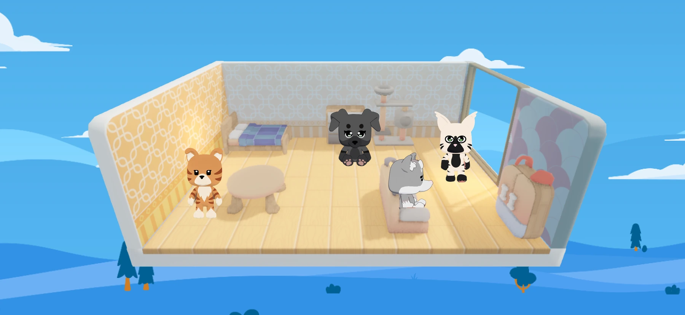
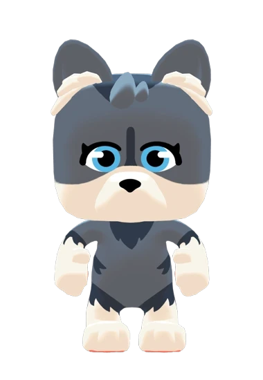

Desarrollo
El cuarto del Yunipet.
Toca el retrato de tu Yunipet para ver sus indicadores. Desde «Asignar mascota» puedes cambiar de Yunipet y elegir en qué habitación vive.


Desarrollo
Toca el retrato de tu Yunipet para ver sus indicadores. Desde «Asignar mascota» puedes cambiar de Yunipet y elegir en qué habitación vive.

